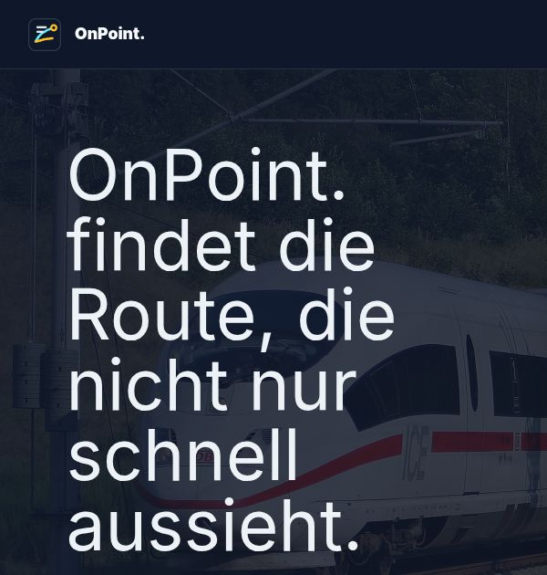
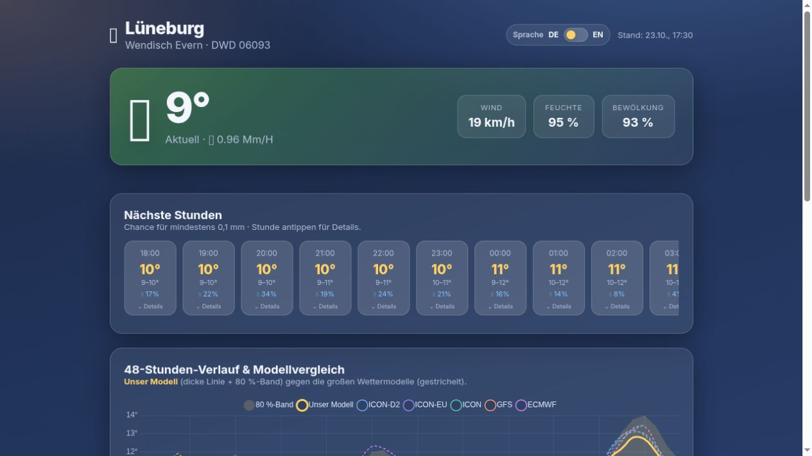
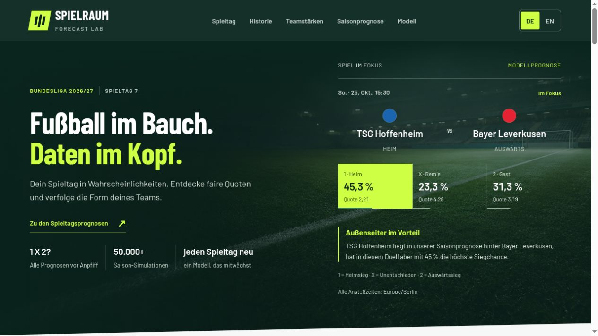

Live demo
Weather Prediction
A fine-tuned weather model for Lüneburg that outperforms professional weather models for local forecasts.
Explore project : Weather PredictionJulian Hermes
A curious mind. An engineering mindset.
Turning complex problems into working software.



Built with curiosity. Running on my Raspberry Pi.
Live demo
A fine-tuned weather model for Lüneburg that outperforms professional weather models for local forecasts.
Explore project : Weather PredictionLive demo
A route planner that tracks real train delays and ranks connections by expected journey time and transfer risk.
Explore project : OnPoint.Live demo
A probabilistic model for predicting football games, built as a practical machine learning and uncertainty project.
Explore project : Football ForecastHardware & deep learning
Turning pen movements into words: a custom BLE pen streams IMU signals into a Conv–BiGRU–Transformer model with CTC decoding, without manually separating letters.
View on GitHub : IMU Pen — Handwriting RecognitionBachelor thesis
Which papers shape a research field? My bachelor thesis combines LLM-based citation context analysis, citation graphs, and statistical models to identify influential anchor publications.
View on GitHub : Finding Anchor PapersHackathon · document AI
An Apertus-powered pipeline that turns Swiss parliamentary PDFs into a shared structured schema, with source quotes behind extracted values and evaluation across 18 parliaments. Submitted to the Hack Apertus hackathon in October 2026.
View on GitHub : ParliParlaUniversity project · LLMs
A document chatbot built with Gradio and LangChain. Ask questions about uploaded PDFs, switch language models, and extract structured JSON summaries from sustainability reports.
View on GitHub : PDFChatNot yet public
A multi-agent research pipeline for assessing patent novelty. Public access is on hold during an active journal submission.
Public access on hold · journal submissionA little about me
I’m an M.Sc. Management & Data Science student with a background in Information Systems. My work sits where data, process knowledge, and software meet: cleaning messy inputs, aligning systems, and building AI-supported workflows that create measurable value.
LLM-powered workflows for product data transformation, matching, and integration.
Reliable pipelines for structured and unstructured data. Built to be maintained.
Python cloud tools, automation, and self-hosted projects that solve concrete problems.
The journey so far
June 2025 - today
Building LLM-supported workflows and AI agents to clean, match, transform, and integrate structured and unstructured product data across systems.
2025 - 2027
Combining data science, management, and applied AI with a focus on practical systems, data workflows, and organizational impact.
2022 - 2025
Major in Information Systems, minor in Business Psychology, with courses in AI and ML, business intelligence, databases, IT security, SAP, and software design.
May 2026 - today
Representing Management & Data Science students and supporting communication between the cohort, faculty, and program stakeholders.
Leuphana University · outstanding academic performance
Professional English communication
Let’s make something useful.
For recruiters, collaborators, and curious people.
I’d love to hear what you have in mind.